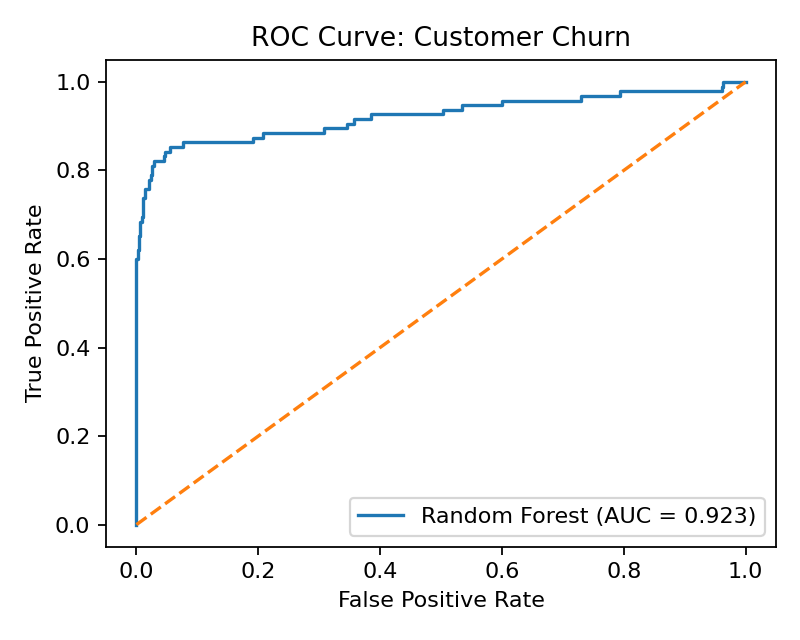
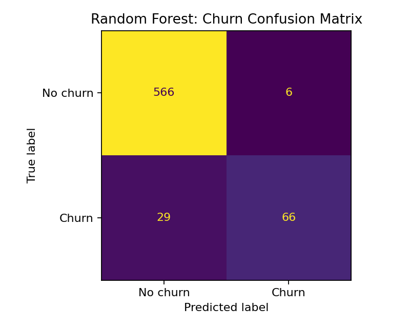

3,333 telecom subscribers. A Random Forest classifier flags who is likely to leave — but the segment analysis below is what tells a retention team why, and which standard playbook moves won't work.
14.49% of subscribers churned in the observed period. Customer service is the obvious suspect — but segmenting churn by plan type, usage tier, and tenure surfaces three drivers a complaint log would never show on its own, plus one common assumption that turns out to be false. Read the four takeaways at the bottom first if you're short on time.
Drag the controls to build a customer profile. The estimate is read directly from the real segment rates charted below — not a black box.
Each chart isolates one variable against churn rate. Hover any bar or point for the exact rate and sample size.
International plan customers churn at 35–68% at every complaint level, including zero complaints.
Not linear: churn dips through Q2–Q3, then spikes sharply in the heaviest-usage quartile.
Cuts churn nearly in half for standard customers — barely moves the international-plan segment.
Flat across all four tenure quartiles — "longtime customer" is not a safety signal here.
Three classifiers trained on the same split. Accuracy alone would be misleading on this imbalanced target (14.5% positive class) — ROC-AUC and recall tell the real story.
Random Forest separates churn from non-churn best across every threshold.
Precision/recall trade-off: Random Forest over-indexes on precision; Logistic Regression catches more true churners but floods the list with false alarms.
| Model | Accuracy | Precision | Recall | F1 | ROC-AUC |
|---|
Rendered directly from the trained Random Forest in the notebook.
Direct from the notebook run — kept in its original rendering.

Direct from the notebook run — kept in its original rendering.

What a retention team should actually do with this, in priority order.
Int'l plan customers who never once called support still churn at 47.0% — vs. 8.6% for non-plan customers with zero complaints. Complaint volume is not an early-warning signal for this segment; dissatisfaction never surfaces as a support ticket.
For standard customers, churn falls from 9.5% to 3.7% across the first three usage quartiles, then jumps to 25.0% in the heaviest-usage quartile. The billing gap between churners and retained customers is concentrated almost entirely in the day rate (+$5.40/mo) — evening and night charges differ by under $1.20.
Voicemail bundling nearly halves churn for ordinary customers (13.9% → 5.3%) but barely moves international-plan customers (43.7% → 39.1%). Spending retention budget there is close to wasted motion.
Churn rate is essentially flat (13.2%–15.7%) across every account-length quartile. Customers who have stuck around for years leave just as readily as new signups.